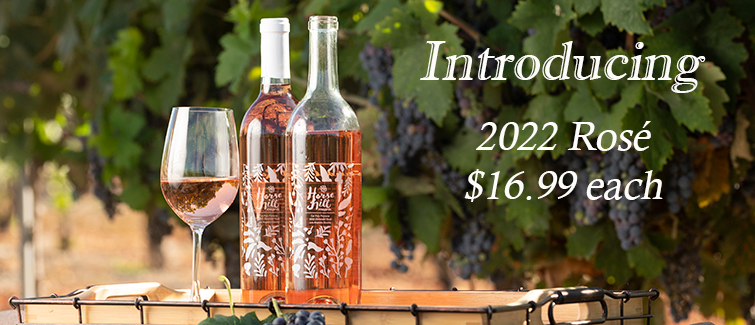

CPP Farm store has a selected assortment of cool fruits and vegetables right from its on-campus farm.
1.1 Featured Products:
Illustration of Multiple columns on a website
Figure 1: A sample of gift-pack prepared from CPP Grown produce

Figure 2: A sample of wine made from grapes grown right here on campus
Great gift for your loved ones. These fruits were raised by students in agriculture majors on CPP campus, processed and packed by student employees at Farm Store.
Fantastic wine produced right here CPP campus by students!
1.2 Web site menus
Use panel-tabset to add multiple tabs to your website.
A sample of gift-pack prepared from CPP Grown produce
A sample of wine made from grapes grown right here on campus
For beautiful graphic of fruit gift pack, see Figure 1.
2 Preparation
2.1 Choosing Data
Penguins are very cute!
… so let’s work with penguin data today.
Note
For this analysis we will use the penguins dataset from the palmerpenguins package.
Expand to learn more about where the data was collected
Data were collected and made available by Dr. Kristen Gorman and the Palmer Station, Antarctica LTER, a member of the Long Term Ecological Research Network.
2.2 Loading packages and reading data
First, we need to:
1. load packages
2. read in data
3. check if that data is in the right format
By “right format”, we mean that the data is tidy, and ready to be summarized and graphed.
Using the data without downloading it
This same dataset is also available in the almerpenguins package.